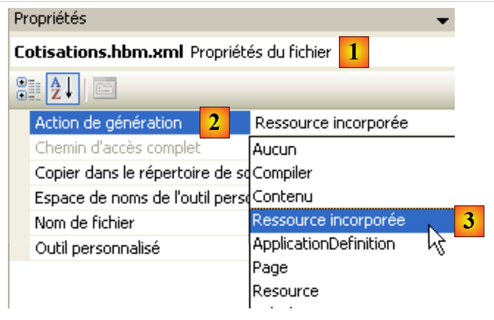

6. Einführung in ORM NHibernate
Dieses Kapitel ist eine kurze Einführung in NHibernate, das .NET-Äquivalent des Java-Frameworks Hibernate. Eine umfassende Einführung findet sich in:
Titel: „NHibernate in Action“, Autor: Pierre-Henri Kuaté, Verlag: Manning, ISBN: 978-1932394924
Ein ORM (Object Relational Mapper) ist eine Sammlung von Bibliotheken, die es einem datenbankgestützten Programm ermöglicht, die Datenbank zu nutzen, ohne explizite SQL-Befehle zu senden und ohne die Besonderheiten des verwendeten SGBD zu kennen.
Voraussetzungen
In einer [débutant-intermédiaire-avancé]-Struktur befindet sich dieses Dokument im Abschnitt [intermédiaire]. Zum Verständnis sind verschiedene Voraussetzungen erforderlich, die in einigen der von mir verfassten Dokumente zu finden sind:
- Programmiersprache C# 2008: [Apprentissage du langage C# Version 3.0 avec le Framework .NET 3.5 ]
- [Spring IoC], verfügbar unter URL und [Spring IoC pour .NET ]. Stellt die Grundlagen der Kontrollumkehr (Inversion of Control) oder der Abhängigkeitsinjektion (Dependency Injection) des Frameworks Spring.Net [Spring.NET | Homepage ] vor.
Zu Beginn der Absätze dieses Dokuments werden manchmal Leseempfehlungen gegeben. Diese verweisen auf vorhergehende Dokumente.
Tools
Die in dieser Fallstudie verwendeten Tools sind im Internet frei verfügbar. Es handelt sich um folgende (Stand: Dezember 2011):
- NHibernate 3.2, verfügbar unter der URL [http://nhforge.org/Default.aspx]
- Spring.net 1.3.2, verfügbar unter der URL [http://www.springframework.net]. Das Framework Spring.net ist sehr umfangreich. Wir werden hier jedoch nur die Bibliothek nutzen, die es bereitstellt, um die Verwendung des Nhibernate-Frameworks zu vereinfachen.
- Log4net 1.2.10 ist unter der URL [http://logging.apache.org/log4net] verfügbar. Dieses Logging-Framework wird von Nhibernate verwendet.
- NUnit 2.5 ist unter der URL [http://www.nunit.org/] verfügbar. Dieses Framework für Unit-Tests entspricht für .NET dem Framework JUnit für die Java-Plattform.
- Der Treiber ADO.NET 6.4.4 für SGBD MySQL 5 ist unter der URL [http://dev.mysql.com/downloads/connector/net] verfügbar
Alle für Visual Studio 2010-Projekte erforderlichen Dateien wurden in einem Ordner zusammengefasst:
 |
6.1. Die Rolle von NHIBERNATE in einer mehrschichtigen .NET-Architektur
Eine .NET-Anwendung, die eine Datenbank nutzt, kann wie folgt in Schichten strukturiert werden:
 |
Die Schicht [dao] kommuniziert über die Schichten API und ADO.NET mit der Schicht SGBD (siehe Abschnitt 3.3).In der vorherigen Architektur ist der Konnektor [ADO.NET] mit dem SGBD verknüpft. Somit ist die Klasse, die die Schnittstelle [IDbConnection] implementiert:
- die Klasse [MySQLConnection] für SGBD und MySQL
- die Klasse [SQLConnection] für SGBD und SQLServer
Die Ebene [dao] ist somit von der verwendeten Ebene SGBD abhängig. Bestimmte Frameworks (Linq, Ibatis.net, NHibernate) heben diese Einschränkung auf, indem sie eine zusätzliche Schicht zwischen der Schicht [dao] und dem Konnektor [ADO.NET] des verwendeten SGBD einfügen. Wir werden hier das Framework [NHibernate] verwenden.
 |
In der obigen Darstellung kommuniziert die Schicht [dao] nicht mehr mit dem Konnektor [ADO.NET], sondern mit dem Framework NHibernate, das ihr eine vom verwendeten Konnektor [ADO.NET] unabhängige Schnittstelle bereitstellt. Diese Architektur ermöglicht es, den SGBD zu wechseln, ohne die Schicht [dao] zu ändern. Es muss dann lediglich der Konnektor [ADO.NET] ausgetauscht werden.
6.2. Die Beispieldatenbank
Um zu veranschaulichen, wie mit NHibernate gearbeitet wird, verwenden wir die folgende Datenbank MySQL [dbpam_nhibernate], die in Abschnitt 3.1 beschrieben ist. Der Export der Datenbankstruktur in eine SQL-Datei liefert folgendes Ergebnis:
Es ist in den Zeilen 6, 20 und 36 zu beachten, dass die Primärschlüssel ID das Attribut „ “ autoincrement aufweisen. Dies bedeutet, dass MySQL bei jedem Hinzufügen eines Datensatzes automatisch die Werte der Primärschlüssel generiert. Der Entwickler muss sich darum nicht kümmern.
6.3. Das C#-Demoprojekt
Um die Konfiguration und Verwendung von NHibernate vorzustellen, verwenden wir die folgende Architektur:
 |
Ein Konsolenprogramm [1] verarbeitet die Daten aus der vorgängigen Datenbank [2] über das Framework [NHibernate] [3]. Dies führt uns zur Vorstellung folgender Elemente:
- die Konfigurationsdateien von NHibernate
- API von NHibernate
Das C#-Projekt sieht wie folgt aus:
 |
Die für das Projekt erforderlichen Elemente sind folgende:
- in [1] die vom Projekt benötigten DLL:
- [NHibernate]: die DLL des Frameworks NHibernate
- [MySql.Data]: die DLL des Konnektors ADO.NET des SGBD MySQL
- [log4net]: die DLL des Log4net-Frameworks, mit der Protokolle generiert werden können
- in [2], die Bildklassen der Datenbanktabellen
- in [3], die Datei [App.config], die die gesamte Anwendung konfiguriert, einschließlich des Frameworks [NHibernate]
- in [4], sowie Test-Konsolenanwendungen
6.3.1. Konfiguration der Datenbankverbindung
Kehren wir zur Testarchitektur zurück:
 |
Wie oben dargestellt, muss [NHibernate] auf die Datenbank zugreifen können. Dazu benötigt es bestimmte Informationen:
- das SGBD, das die Datenbank verwaltet (MySQL, SQLServer, Postgres, Oracle, ...). Die meisten SGBD haben der Sprache SQL eigene Erweiterungen hinzugefügt. Wenn NHibernate die SGBD kennt, kann es die Befehle, die es an diese SGBD sendet, an diese anpassen. NHibernate nutzt das Konzept des Dialekts SQL.
- die Parameter für die Verbindung zur Datenbank (Name der Datenbank, Name des Benutzers, der die Verbindung besitzt, dessen Passwort)
Diese Informationen können in der Konfigurationsdatei [App.config] hinterlegt werden. Hier ist die Datei, die mit einer Datenbank MySQL 5 verwendet wird:
<?xml version="1.0" encoding="utf-8" ?>
<configuration>
<!-- Konfigurationsabschnitte -->
<configSections>
<section name="log4net" type="log4net.Config.Log4NetConfigurationSectionHandler,log4net" />
<section name="hibernate-configuration" type="NHibernate.Cfg.ConfigurationSectionHandler, NHibernate" />
</configSections>
<!-- Konfiguration NHibernate -->
<hibernate-configuration xmlns="urn:nhibernate-configuration-2.2">
<session-factory>
<property name="connection.provider">NHibernate.Connection.DriverConnectionProvider</property>
<!--
<property name="connection.driver_class">NHibernate.Driver.MySqlDataDriver</property>
-->
<property name="dialect">NHibernate.Dialect.MySQL5Dialect</property>
<property name="connection.connection_string">
Server=localhost;Database=dbpam_nhibernate;Uid=root;Pwd=;
</property>
<property name="show_sql">false</property>
<mapping assembly="pam-nhibernate-demos"/>
</session-factory>
</hibernate-configuration>
<!-- Dieser Abschnitt enthält die log4net-Konfigurationseinstellungen -->
<!-- NOTE IMPORTANTE: Die Protokolle sind standardmäßig nicht aktiviert. Sie müssen programmgesteuert mit dem Befehl log4net.Config.XmlConfigurator.Configure(); aktiviert werden;
! -->
<log4net>
<!-- Definieren Sie einen Ausgabe-Appender (wo die Protokolle gespeichert werden sollen) -->
<appender name="LogFileAppender" type="log4net.Appender.FileAppender, log4net">
<param name="File" value="log.txt" />
<param name="AppendToFile" value="false" />
<layout type="log4net.Layout.PatternLayout, log4net">
<param name="ConversionPattern" value="%d [%t] %-5p %c [%x] <%X{auth}> - %m%n" />
</layout>
</appender>
<appender name="LogDebugAppender" type="log4net.Appender.DebugAppender, log4net">
<layout type="log4net.Layout.PatternLayout, log4net">
<param name="ConversionPattern" value="%d [%t] %-5p %c [%x] <%X{auth}> - %m%n"/>
</layout>
</appender>
<appender name="ConsoleAppender" type="log4net.Appender.ConsoleAppender, log4net">
<layout type="log4net.Layout.PatternLayout, log4net">
<param name="ConversionPattern" value="%d [%t] %-5p %c [%x] <%X{auth}> - %m%n"/>
</layout>
</appender>
<!-- Die Stammkategorie einrichten, die Standardprioritätsstufe festlegen und den/die Appender hinzufügen (wo die Protokolle gespeichert werden) -->
<root>
<priority value="INFO" />
<!--
<appender-ref ref="LogFileAppender" />
<appender-ref ref="LogDebugAppender"/>
-->
<appender-ref ref="ConsoleAppender"/>
</root>
<!-- Legen Sie die Prioritätsstufe für bestimmte Namespaces fest -->
<!-- Mögliche Stufen: ALL, DEBUG, INFO, WARN, ERROR, FATAL, OFF -->
<logger name="NHibernate">
<level value="INFO" />
</logger>
</log4net>
</configuration>
- Zeilen 4–7: Definieren Konfigurationsabschnitte in der Datei [App.config]. Betrachten wir Zeile 6:
<section name="hibernate-configuration" type="NHibernate.Cfg.ConfigurationSectionHandler, NHibernate" />
Diese Zeile definiert den Konfigurationsabschnitt „NHibernate“ in der Datei „[App.config]“. Sie hat zwei Attribute: „name“ und „type“.
- Das Attribut [name] benennt den Konfigurationsabschnitt. Dieser Abschnitt muss hier durch die Tags <name>...</name> begrenzt sein, in diesem Fall <hibernate-configuration>...</hibernate-configuration> in den Zeilen 11–24.
- Das Attribut [type=classe,DLL] gibt den Namen der Klasse an, die für die Verarbeitung des durch das Attribut [name] definierten Abschnitts zuständig ist, sowie das Attribut DLL, das diese Klasse enthält. Hier heißt die Klasse [NHibernate.Cfg.ConfigurationSectionHandler] und befindet sich in der DLL [NHibernate.dll]. Wir erinnern uns, dass diese DLL zu den Referenzen des untersuchten Projekts gehört.
Betrachten wir nun den Konfigurationsabschnitt von NHibernate:
<!-- Konfiguration NHibernate -->
<hibernate-configuration xmlns="urn:nhibernate-configuration-2.2">
<session-factory>
<property name="connection.provider">NHibernate.Connection.DriverConnectionProvider</property>
<!--
<property name="connection.driver_class">NHibernate.Driver.MySqlDataDriver</property>
-->
<property name="dialect">NHibernate.Dialect.MySQL5Dialect</property>
<property name="connection.connection_string">
Server=localhost;Database=dbpam_nhibernate;Uid=root;Pwd=;
</property>
<property name="show_sql">false</property>
<mapping assembly="pam-nhibernate-demos"/>
</session-factory>
</hibernate-configuration>
- Zeile 2: Die Konfiguration von NHibernate befindet sich innerhalb eines <hibernate-configuration>-Tags. Das Attribut xmlns (Xml NameSpace) legt die Version fest, die zur Konfiguration von NHibernate verwendet wird. Tatsächlich hat sich die Art und Weise, wie NHibernate konfiguriert wird, im Laufe der Zeit weiterentwickelt. Hier wird die Version 2.2 verwendet.
- Zeile 3: Die Konfiguration von NHibernate ist hier vollständig im Tag <session-factory> enthalten (Zeilen 3 und 14). Eine NHibernate-Sitzung ist das Werkzeug, das verwendet wird, um mit einer Datenbank gemäß dem folgenden Schema zu arbeiten:
- Sitzung öffnen
- Arbeit mit der Datenbank über die Methoden von API und NHibernate
- Sitzung schließen
Die Sitzung wird durch eine factory erstellt, einen Oberbegriff für eine Klasse, die Objekte erstellen kann. Die Zeilen 3–14 konfigurieren diese factory.
- Zeilen 4, 6, 8, 9: Konfigurieren die Verbindung zur Zieldatenbank. Die wichtigsten Informationen sind der Name des verwendeten SGBD, der Name der Datenbank, die Benutzer-ID und das Passwort.
- Zeile 4: Definiert den Verbindungsanbieter, bei dem eine Verbindung zur Datenbank angefordert wird. Der Wert der Eigenschaft [connection.provider] ist der Name einer Klasse NHibernate. Diese Eigenschaft ist unabhängig vom verwendeten SGBD.
- Zeile 6: Der zu verwendende Treiber ADO.NET. Dies ist der Name einer Klasse NHibernate, die für einen bestimmten SGBD spezialisiert ist, hier MySQL. Zeile 6 wurde auskommentiert, da sie nicht unbedingt erforderlich ist.
- Zeile 8: Die Eigenschaft [dialect] legt den Dialekt SQL fest, der mit SGBD verwendet werden soll. Hier handelt es sich um den Dialekt von SGBD, nämlich MySQL.
Wenn man zu SGBD wechselt, wie findet man dann den Dialekt NHibernate dafür? Kehren wir zum vorherigen C#-Projekt zurück und doppelklicken wir auf die DLL [NHibernate] auf der Registerkarte [References]:
 |
- in [1]: Auf der Registerkarte „[Explorateur d'objets]“ werden eine Reihe von DLL angezeigt, darunter auch diejenigen, auf die das Projekt verweist.
- In [2] werden die DLL und [NHibernate]
- in [3] die DLL und die [NHibernate], die weiterentwickelt wurden. Dort finden sich die verschiedenen Namespaces, die darin definiert sind.
- in [4] der Namensraum [NHibernate.Dialect], in dem sich die Klassen befinden, die die verschiedenen verwendbaren Dialekte SQL definieren.
- In [5] befindet sich die Dialektklasse von SGBD MySQL 5.
 |
- in [6], der Namensraum der Klasse [MySqlDataDriver], die in Zeile 6 unten verwendet wird:
<!-- Konfiguration NHibernate -->
<hibernate-configuration xmlns="urn:nhibernate-configuration-2.2">
<session-factory>
<property name="connection.provider">NHibernate.Connection.DriverConnectionProvider</property>
<!--
<property name="connection.driver_class">NHibernate.Driver.MySqlDataDriver</property>
-->
<property name="dialect">NHibernate.Dialect.MySQLDialect</property>
<property name="connection.connection_string">
Server=localhost;Database=dbpam_nhibernate;Uid=root;Pwd=;
</property>
<property name="show_sql">false</property>
<mapping assembly="pam-nhibernate-demos"/>
</session-factory>
</hibernate-configuration>
- Zeilen 9–11: Die Verbindungszeichenfolge zur Datenbank. Diese Zeichenfolge hat das Format „param1=val1;param2=val2; …“. Die Gesamtheit der so definierten Parameter ermöglicht es dem Treiber von SGBD, eine Verbindung herzustellen. Die Form dieser Verbindungszeichenfolge hängt vom verwendeten SGBD ab. Die Verbindungszeichenfolgen für die wichtigsten SGBD finden Sie auf der Website [http://www.connectionstrings.com/]. Hier ist die Zeichenfolge „Server=localhost;Database=dbpam_nhibernate;Uid=root;Pwd=;“ eine Verbindungszeichenfolge für das SGBD MySQL. Sie gibt an, dass:
- Server=localhost;: SGBD befindet sich auf demselben Rechner wie der Client, der die Verbindung herstellen möchte
- Database=dbpam_nhibernate; : die Ziel-MySQL-Datenbank
- Uid=root;: Der Benutzer, der die Verbindung herstellt, ist der Root-Benutzer
- Pwd=;: Dieser Benutzer hat kein Passwort (Sonderfall in diesem Beispiel)
- Zeile 12: Die Eigenschaft [show_sql] gibt an, ob NHibernate in seinen Protokollen die Befehle SQL anzeigen soll, die er an die Datenbank sendet. In der Entwicklungsphase ist es sinnvoll, diese Eigenschaft auf [true] zu setzen, um genau zu wissen, was NHibernate tut.
- Zeile 13: Um das Tag <mapping> zu verstehen, kehren wir zur Architektur der Anwendung zurück:
 |
Wenn das Konsolenprogramm ein direkter Client des Konnektors ADO.NET wäre und die Liste der Mitarbeiter anfordern wollte, würde es den Konnektor anweisen, den Befehl SQL Select auszuführen, und würde im Gegenzug ein Objekt vom Typ IDataReader erhalten, das es verarbeiten müsste, um die ursprünglich gewünschte Mitarbeiterliste zu erhalten.
Im obigen Beispiel ist das Konsolenprogramm der Client von NHibernate und NHibernate ist der Client des Konnektors ADO.NET. Wir werden später sehen, dass API von NHibernate es dem Konsolenprogramm ermöglicht, die Liste der Mitarbeiter abzufragen. NHibernate wandelt diese Anfrage in einen Befehl SQL Select um, den es vom Konnektor ADO.NET ausführen lässt. Dieser gibt ein Objekt vom Typ IDataReader zurück. Anhand dieses Objekts muss NHibernate in der Lage sein, die angeforderte Liste der Mitarbeiter zu erstellen. Dies wird durch die Konfiguration ermöglicht. Jeder Tabelle in der Datenbank ist eine C#-Klasse zugeordnet. So kann NHibernate anhand der von IDataReader zurückgegebenen Zeilen der Tabelle [employes] eine Liste von Objekten erstellen, die Mitarbeiter darstellen, und diese an das Konsolenprogramm zurückgeben. Diese Beziehungen zwischen Tabellen und Klassen werden in Konfigurationsdateien angelegt. NHibernate verwendet den Begriff „Mapping“, um diese Beziehungen zu definieren.
Kehren wir zu Zeile 13 unten zurück:
<!-- Konfiguration NHibernate -->
<hibernate-configuration xmlns="urn:nhibernate-configuration-2.2">
<session-factory>
<property name="connection.provider">NHibernate.Connection.DriverConnectionProvider</property>
<!--
<property name="connection.driver_class">NHibernate.Driver.MySqlDataDriver</property>
-->
<property name="dialect">NHibernate.Dialect.MySQL5Dialect</property>
<property name="connection.connection_string">
Server=localhost;Database=dbpam_nhibernate;Uid=root;Pwd=;
</property>
<property name="show_sql">false</property>
<mapping assembly="pam-nhibernate-demos"/>
</session-factory>
</hibernate-configuration>
Zeile 13 gibt an, dass die Konfigurationsdateien für die Zuordnungen zwischen Tabellen und Klassen in der Assembly [pam-nhibernate-demos] zu finden sind. Eine Assembly ist die ausführbare Datei oder die DLL, die durch die Kompilierung eines Projekts erzeugt wird. Hier werden die Zuordnungsdateien in der Assembly des Beispielprojekts abgelegt. Um den Namen dieser Assembly zu erfahren, müssen Sie die Projekteigenschaften überprüfen:
 |
- in [1], die Projekteigenschaften
- auf der Registerkarte [Application] [2], der Name der Assembly [3], die generiert wird.
- Da der Ausgabetyp [Application console] [4] ist, wird die bei der Kompilierung des Projekts generierte Datei den Namen [pam-nhibernate-demos.exe] tragen. Wäre der Ausgabetyp [Bibliothèque de classes] [5], würde die bei der Kompilierung des Projekts generierte Datei den Namen [pam-nhibernate-demos.dll] tragen
- Die Assembly wird im Ordner „[bin/Release]“ des Projekts „[6]“ generiert.
Aus der vorstehenden Erklärung geht hervor, dass sich die Zuordnungstabellen <--> Klassen in der Datei [pam-nhibernate-demos.exe] [6] befinden müssen.
6.3.2. Konfiguration des „ “ für die Zuordnung von Tabellen <--> Klassen
Kehren wir zur Architektur des untersuchten Projekts zurück:
 |
- In [1] nutzt das Konsolenprogramm die Methoden aus API des Frameworks NHibernate. Diese beiden Blöcke tauschen Objekte aus.
- In [2] nutzt NHibernate das API eines Konnektors .NET. Er sendet Befehle an den Ziel-SGBD.
Das Konsolenprogramm wird Objekte bearbeiten, die die Datenbanktabellen widerspiegeln. In diesem Projekt wurden diese Objekte und die Verknüpfungen, die sie mit den Datenbanktabellen verbinden, im folgenden Ordner abgelegt:
 |
- Jede Datenbanktabelle entspricht einer Klasse und einer Zuordnungsdatei zwischen beiden
6.3.2.1. Zuordnung der Tabelle [cotisations]
Betrachten wir die Tabelle [cotisations]:
 |
|
Eine Zeile dieser Tabelle kann in ein Objekt vom Typ [Cotisations.cs] wie folgt gekapselt werden:
namespace PamNHibernateDemos {
public class Cotisations {
// automatische Eigenschaften
public virtual int Id { get; set; }
public virtual int Version { get; set; }
public virtual double CsgRds { get; set; }
public virtual double Csgd { get; set; }
public virtual double Secu { get; set; }
public virtual double Retraite { get; set; }
// Konstruktoren
public Cotisations() {
}
// ToString
public override string ToString() {
return string.Format("[{0}|{1}|{2}|{3}]", CsgRds, Csgd, Secu, Retraite);
}
}
}
Für jede Spalte der Tabelle [cotisations] wurde eine automatische Eigenschaft angelegt. Jede dieser Eigenschaften muss als virtuell deklariert werden (virtual), da NHibernate von dieser Klasse abgeleitet wird und deren Eigenschaften überschreiben (override) wird. Diese müssen daher virtuell sein.
Es ist in Zeile 1 zu beachten, dass die Klasse zum Namensraum [PamNHibernateDemos] gehört.
Die Mapping-Datei [Cotisations.hbm.xml] zwischen der Tabelle [cotisations] und der Klasse [Cotisations] lautet wie folgt:
<?xml version="1.0" encoding="utf-8" ?>
<hibernate-mapping xmlns="urn:nhibernate-mapping-2.2"
namespace="PamNHibernateDemos" assembly="pam-nhibernate-demos">
<class name="Cotisations" table="COTISATIONS">
<id name="Id" column="ID" unsaved-value="0">
<generator class="native" />
</id>
<version name="Version" column="VERSION"/>
<property name="CsgRds" column="CSGRDS"/>
<property name="Csgd" column="CSGD"/>
<property name="Retraite" column="RETRAITE"/>
<property name="Secu" column="SECU"/>
</class>
</hibernate-mapping>
- Die Mapping-Datei ist eine XML-Datei, die innerhalb des Tags <hibernate-mapping> definiert ist (Zeilen 2 und 14)
- Zeile 4: Das Tag <class> stellt die Verbindung zwischen einer Datenbanktabelle und einer Klasse her. Hier zwischen der Tabelle [COTISATIONS] (Attribut table) und der Klasse [Cotisations] (Attribut name). In der Datei .NET muss eine Klasse durch ihren vollständigen Namen (einschließlich Namespace) und durch die Assembly, in der sie enthalten ist, definiert werden. Diese beiden Informationen werden in Zeile 3 angegeben. Die erste (Namespace) findet sich in der Definition der Klasse. Die zweite Angabe (Assembly) ist der Name der Assembly des Projekts. Wir haben bereits erläutert, wie man diesen Namen ermittelt.
- Zeilen 5–7: Das Tag <id> dient dazu, das Mapping des Primärschlüssels der Tabelle [cotisations] zu definieren.
- Zeile 5: Das Attribut name bezeichnet das Feld der Klasse [Cotisations], das den Primärschlüssel der Tabelle [cotisations] aufnehmen wird. Das Attribut column bezeichnet die Spalte der Tabelle [cotisations], die als Primärschlüssel dient. Das Attribut unsaved-value dient dazu, einen noch nicht generierten Primärschlüssel zu definieren. Anhand dieses Werts kann NHibernate erkennen, wie ein Objekt [Cotisations] in der Tabelle [cotisations] gespeichert werden soll. Wenn dieses Objekt ein Feld mit der ID 0 hat, wird die Operation SQL INSERT ausgeführt, andernfalls die Operation SQL UPDATE. Der Wert von unsaved-value hängt vom Typ des Feldes Id der Klasse [Cotisations] ab. Hier ist es vom Typ int, und der Standardwert für den Typ int ist 0. Ein noch nicht gespeichertes Objekt vom Typ [Cotisations] (also ohne Primärschlüssel) hat daher im Feld Id den Wert 0. Wäre das Feld Id vom Typ Object oder davon abgeleitet gewesen, hätte man unsaved-value=null. geschrieben
- Zeile 6: Wenn NHibernate ein Objekt [Cotisations] mit einem Feld Id=0 speichern soll, muss es in der Datenbank eine Operation INSERT durchführen, bei der es einen Wert für den Primärschlüssel des Datensatzes abrufen muss. Die meisten SGBD verfügen über eine proprietäre Methode zur automatischen Generierung dieses Werts. Das Tag <generator> dient dazu, den Mechanismus festzulegen, der zur Generierung des Primärschlüssels verwendet werden soll. Das Tag <generator class="native"> gibt an, dass der Standardmechanismus des verwendeten SGBD verwendet werden soll. In Abschnitt 6.2 haben wir gesehen, dass die Primärschlüssel unserer drei MySQL-Tabellen das Attribut autoincrement hatten. Bei seinen Operationen INSERT liefert NHibernate keinen Wert für die Spalte ID des hinzugefügten Datensatzes, sodass MySQL diesen Wert generiert.
- Zeile 8: Das Tag <version> dient dazu, die Spalte der Tabelle (sowie das zugehörige Feld der Klasse) zu definieren, mit der die Datensätze „versioniert“ werden können. Zu Beginn hat die Version den Wert 1. Sie wird bei jeder Operation UPDATE erhöht. Außerdem wird jeder Vorgang UPDATE oder DELETE mit einem Filter WHERE ID= id AND VERSION=v1. Ein Benutzer kann ein Objekt daher nur ändern oder löschen, wenn er über die richtige Version davon verfügt. Ist dies nicht der Fall, wird von NHibernate eine Ausnahme ausgelöst.
- Zeile 9: Das Tag <property> dient dazu, ein normales Spalten-Mapping zu definieren (weder Primärschlüssel noch Versionsspalte). So gibt Zeile 9 an, dass die Spalte CSGRDS der Tabelle [COTISATIONS] der Eigenschaft CsgRds der Klasse [Cotisations] zugeordnet ist.
6.3.2.2. Zuordnung der Tabelle [indemnites]
Betrachten wir die Tabelle [indemnites]:
 |
|
Eine Zeile dieser Tabelle kann in ein Objekt vom Typ [Indemnites] wie folgt gekapselt werden:
namespace PamNHibernateDemos {
public class Indemnites {
// automatische Eigenschaften
public virtual int Id { get; set; }
public virtual int Version { get; set; }
public virtual int Indice { get; set; }
public virtual double BaseHeure { get; set; }
public virtual double EntretienJour { get; set; }
public virtual double RepasJour { get; set; }
public virtual double IndemnitesCp { get; set; }
// Konstruktoren
public Indemnites() {
}
// Identität
public override string ToString() {
return string.Format("[{0}|{1}|{2}|{3}|{4}]", Indice, BaseHeure, EntretienJour, RepasJour, IndemnitesCp);
}
}
}
Die Mapping-Datei für die Tabelle [indemnites] <--> Klasse [Indemnites] könnte wie folgt aussehen (Indemnites.hbm.xml):
<?xml version="1.0" encoding="utf-8" ?>
<hibernate-mapping xmlns="urn:nhibernate-mapping-2.2"
namespace="PamNHibernateDemos" assembly="pam-nhibernate-demos">
<class name="Indemnites" table="INDEMNITES">
<id name="Id" column="ID" unsaved-value="0">
<generator class="native" />
</id>
<version name="Version" column="VERSION"/>
<property name="Indice" column="INDICE" unique="true"/>
<property name="BaseHeure" column="BASE_HEURE" />
<property name="EntretienJour" column="ENTRETIEN_JOUR" />
<property name="RepasJour" column="REPAS_JOUR" />
<property name="IndemnitesCp" column="INDEMNITES_CP" />
</class>
</hibernate-mapping>
Hier gibt es nichts Neues im Vergleich zu der zuvor erläuterten Mapping-Datei. Der einzige Unterschied befindet sich in Zeile 9. Das Attribut „unique=“true“ gibt an, dass in der Tabelle [indemnites] eine Eindeutigkeitsbeschränkung für die Spalte [INDICE] besteht: Es dürfen keine zwei Zeilen mit demselben Wert für die Spalte [INDICE] vorhanden sein.
6.3.2.3. Mapping der Tabelle [employes]
Betrachten wir die Tabelle [employes]:
 |
|
Die Neuerung gegenüber den vorherigen Tabellen ist das Vorhandensein eines Fremdschlüssels: Die Spalte [INDEMNITE_ID] ist ein Fremdschlüssel auf die Spalte [ID] der Tabelle [INDEMNITES]. Dieses Feld verweist auf die Zeile der Tabelle [INDEMNITES], die zur Berechnung der Vergütungen des Mitarbeiters herangezogen werden soll.
Die Klasse [Employe] -Abbildung der Tabelle [employes] könnte wie folgt aussehen:
namespace PamNHibernateDemos {
public class Employe {
// automatische Eigenschaften
public virtual int Id { get; set; }
public virtual int Version { get; set; }
public virtual string SS { get; set; }
public virtual string Nom { get; set; }
public virtual string Prenom { get; set; }
public virtual string Adresse { get; set; }
public virtual string Ville { get; set; }
public virtual string CodePostal { get; set; }
public virtual Indemnites Indemnites { get; set; }
// Konstruktoren
public Employe() {
}
// ToString
public override string ToString() {
return string.Format("[{0}|{1}|{2}|{3}|{4}|{5}|{6}]", SS, Nom, Prenom, Adresse, Ville, CodePostal, Indemnites);
}
}
}
Die Mapping-Datei [Employe.hbm.xml] könnte wie folgt aussehen:
<?xml version="1.0" encoding="utf-8" ?>
<hibernate-mapping xmlns="urn:nhibernate-mapping-2.2"
namespace="PamNHibernateDemos" assembly="pam-nhibernate-demos">
<class name="Employe" table="EMPLOYES">
<id name="Id" column="ID" unsaved-value="0">
<generator class="native" />
</id>
<version name="Version" column="VERSION"/>
<property name="SS" column="SS"/>
<property name="Nom" column="NOM"/>
<property name="Prenom" column="PRENOM"/>
<property name="Adresse" column="ADRESSE"/>
<property name="Ville" column="VILLE"/>
<property name="CodePostal" column="CP"/>
<many-to-one name="Indemnites" column="INDEMNITE_ID" cascade="save-update" lazy="false"/>
</class>
</hibernate-mapping>
Die Neuerung findet sich in Zeile 15 mit dem Auftreten eines neuen Tags: <many-to-one>. Dieses Tag dient dazu, eine Fremdschlüsselspalte [INDEMNITE_ID] aus der Tabelle [EMPLOYES] auf die Eigenschaft [Indemnites] der Klasse [Employe] abzubilden:
namespace PamNHibernateDemos {
public class Employe {
// automatische Eigenschaften
..
public virtual Indemnites Indemnites { get; set; }
...
}
}
Die Tabelle [EMPLOYES] verfügt über einen Fremdschlüssel [INDEMNITE_ID], der auf die Spalte [ID] der Tabelle [INDEMNITES] verweist. Mehrere (many) Zeilen der Tabelle [EMPLOYES] können auf dieselbe Zeile (one) der Tabelle [INDEMNITES] verweisen. Daher der Name des Tags <many-to-one>. Dieses Tag hat hier die folgenden Attribute:
- column: gibt den Namen der Spalte in der Tabelle [EMPLOYES] an, die als Fremdschlüssel auf die Tabelle [INDEMNITES] verweist
- name: gibt die Eigenschaft der Klasse [Employe] an, die dieser Spalte zugeordnet ist. Der Typ dieser Eigenschaft ist zwangsläufig die Klasse, die der Zieltabelle des Fremdschlüssels zugeordnet ist, hier die Tabelle [INDEMNITES]. Wir wissen, dass es sich bei dieser Klasse um die bereits beschriebene Klasse [Indemnites] handelt. Dies spiegelt sich in Zeile 5 oben wider. Das bedeutet, dass NHibernate, wenn es ein Objekt [Employe] aus der Datenbank abruft, auch das dazugehörige Objekt [Indemnites] abruft.
- cascade: Dieses Attribut kann verschiedene Werte annehmen:
- save-update: Ein Einfüge- (save) oder Aktualisierungsvorgang (update) am Objekt [Employe] muss auf das darin enthaltene Objekt [Indemnites] übertragen werden.
- delete: Das Löschen eines Objekts [Employe] muss auf das darin enthaltene Objekt [Indemnites] übertragen werden.
- all: Überträgt die Vorgänge „Einfügen“ (save), „Aktualisieren“ (update) und „Löschen“ (delete).
- none: Es werden keine Vorgänge weitergegeben.
Abschließend sei noch einmal auf die Konfiguration von NHibernate in der Datei [App.config] hingewiesen:
<!-- Konfiguration NHibernate -->
<hibernate-configuration xmlns="urn:nhibernate-configuration-2.2">
<session-factory>
<property name="connection.provider">NHibernate.Connection.DriverConnectionProvider</property>
<!--
<property name="connection.driver_class">NHibernate.Driver.MySqlDataDriver</property>
-->
<property name="dialect">NHibernate.Dialect.MySQL5Dialect</property>
<property name="connection.connection_string">
Server=localhost;Database=dbpam_nhibernate;Uid=root;Pwd=;
</property>
<property name="show_sql">false</property>
<mapping assembly="pam-nhibernate-demos"/>
</session-factory>
</hibernate-configuration>
Zeile 13 gibt an, dass die Mapping-Dateien *.hbm.xml in der Assembly [pam-nhibernate-demos] zu finden sind. Dies ist nicht standardmäßig eingestellt. Es muss im C#-Projekt konfiguriert werden:
 |
- in [1] wählt man die Eigenschaften einer Mapping-Datei aus
- in [2]; die Generierungsaktion muss [Ressource incorporée] [3] lauten. Das bedeutet, dass bei der Generierung des Projekts die Mapping-Datei in die generierte Assembly eingebunden werden muss.
6.4. API aus NHibernate
Kommen wir zurück zur Architektur unseres Beispielprojekts:
 |
In den vorangegangenen Abschnitten haben wir NHibernate auf zwei Arten konfiguriert:
- In [App.config] haben wir die Verbindung zur Datenbank konfiguriert
- wir haben für jede Tabelle der Datenbank die Bildklasse dieser Tabelle und die Mapping-Datei angegeben, die den Übergang von der Klasse zur Tabelle und umgekehrt ermöglicht.
Nun müssen wir noch die von NHibernate angebotenen Methoden zur Bearbeitung der Datenbankdaten kennenlernen: Einfügen, Aktualisieren, Löschen, Auflisten.
6.4.1. Das Objekt SessionFactory
Jeder Vorgang mit NHibernate wird innerhalb einer Sitzung ausgeführt. Eine typische Abfolge von Vorgängen mit NHibernate sieht wie folgt aus:
- eine Sitzung NHibernate eröffnen
- eine Transaktion in der Sitzung starten
- Persistenzoperationen mit der Sitzung durchführen (Load, Get, Find, CreateQuery, Save, SaveOrUpdate, Delete)
- die Transaktion bestätigen (Commit) oder rückgängig machen (Rollback)
- die Sitzung schließen: NHibernate
Eine Sitzung wird über eine Factory vom Typ [SessionFactory] abgerufen. Diese Factory ist diejenige, die durch das Tag <session-factory> in der Konfigurationsdatei [App.config] konfiguriert wurde:
<!-- Konfiguration NHibernate -->
<hibernate-configuration xmlns="urn:nhibernate-configuration-2.2">
<session-factory>
<property name="connection.provider">NHibernate.Connection.DriverConnectionProvider</property>
<!--
<property name="connection.driver_class">NHibernate.Driver.MySqlDataDriver</property>
-->
<property name="dialect">NHibernate.Dialect.MySQL5Dialect</property>
<property name="connection.connection_string">
Server=localhost;Database=dbpam_nhibernate;Uid=root;Pwd=;
</property>
<property name="show_sql">false</property>
<mapping assembly="pam-nhibernate-demos"/>
</session-factory>
</hibernate-configuration>
In C#-Code kann die SessionFactory wie folgt abgerufen werden:
ISessionFactory sessionFactory = new Configuration().Configure().BuildSessionFactory();
Die Klasse „Configuration“ ist eine Klasse des Frameworks NHibernate. Die vorstehende Anweisung nutzt den Konfigurationsabschnitt von NHibernate in [App.config]. Das erhaltene Objekt [ISessionFactory] verfügt dann über die folgenden:
- Informationen zum Herstellen einer Verbindung zur Zieldatenbank
- Mapping-Dateien zwischen den Datenbanktabellen und den von NHibernate verarbeiteten persistenten Klassen.
6.4.2. Die Sitzung NHibernate
Sobald SessionFactory erstellt wurde (dies geschieht einmalig), können die Sitzungen abgerufen werden, die Persistenzoperationen mit NHibernate ermöglichen. Ein gängiger Code lautet wie folgt:
try{
// Anmeldung
using (ISession session = sessionFactory.OpenSession())
{
// Transaktionsstart
using (ITransaction transaction = session.BeginTransaction())
{
........................ opérations de persistance
// Transaktionsfreigabe
transaction.Commit();
}
}
}catch (Exception ex){
....
}
- Zeile 3: Innerhalb einer „using“-Klausel wird eine Sitzung auf Basis von SessionFactory erstellt. Beim Verlassen der Klausel using wird die Sitzung automatisch geschlossen. Ohne die Klausel using müsste die Sitzung explizit geschlossen werden (session.Close()).
- Zeile 6: Die Persistenzvorgänge werden innerhalb einer Transaktion ausgeführt. Entweder sind alle erfolgreich oder keiner ist erfolgreich. Innerhalb der Klausel using, wird die Transaktion durch einen Commit (Zeile 10) bestätigt. Wenn innerhalb der Transaktion ein Persistenzvorgang eine Ausnahme auslöst, wird die Transaktion beim Verlassen von using automatisch durch einen Rollback ungültig gemacht.
- Das „try/catch“-Block in den Zeilen 1 und 13 ermöglicht es, eine mögliche Ausnahme abzufangen, die vom Code innerhalb des „try“-Blocks (Sitzung, Transaktion, Persistenz) ausgelöst wird.
6.4.3. Die Schnittstelle ISession
Im Folgenden stellen wir einige der Methoden der Schnittstelle ISession vor, die von einer Sitzung NHibernate implementiert wird:
startet eine Transaktion in der Sitzung ITransaction tx=session.BeginTransaction(); | |
leert die Sitzung. Die darin enthaltenen Objekte werden freigegeben. session.Clear(); | |
schließt die Sitzung. Die darin enthaltenen Objekte werden mit der Datenbank synchronisiert. Dieser Synchronisierungsvorgang erfolgt auch am Ende einer Transaktion. Letzteres ist der häufigste Fall. session.Close(); | |
erstellt eine Abfrage HQL (Hibernate Query Language) zur späteren Ausführung. IQuery query=session.createQuery("select e from Employe e); | |
löscht ein Objekt. Dieses kann zur Sitzung gehören (angebunden) oder nicht (abgekoppelt). Bei der Synchronisierung der Sitzung mit der Datenbank wird eine Operation SQL DELETE für dieses Objekt durchgeführt. // Ein Mitarbeiter wird geladen: BD Mitarbeiter e = session.Get<Mitarbeiter>(143); // Er wird gelöscht session.Delete(e); | |
erzwingt die Synchronisierung der Sitzung mit der Datenbank. Der Inhalt der Sitzung ändert sich nicht. session.Flush(); | |
ruft das Objekt T mit dem Primärschlüssel id aus der Datenbank ab. Falls dieses Objekt nicht existiert, wird der Zeiger auf null gesetzt. // Wir laden einen Mitarbeiter aus der BD Mitarbeiter e = session.Get<Mitarbeiter>(143); | |
fügt das Objekt „obj“ in die Sitzung ein. Dieses Objekt hat vor dem Aufruf von Save keinen Primärschlüssel. Nach dem Save hat es einen. Bei der Synchronisierung der Sitzung wird eine Operation SQL INSERT an der Datenbank durchgeführt. // Wir legen einen Mitarbeiter an Mitarbeiter e = new Mitarbeiter(){...}; // Speichern e = session.Save(e); | |
Führt die Transaktion Save aus, wenn „obj“ keinen Primärschlüssel hat, oder die Transaktion Update, wenn bereits einer vorhanden ist. | |
aktualisiert das Objekt „obj“ in der Datenbank. Anschließend wird eine Transaktion SQL UPDATE in der Datenbank ausgeführt. // Ein Mitarbeiter wird aus der Transaktion BD geladen Mitarbeiter e = session.Get<Mitarbeiter>(143); // Sein Name wird geändert e.Nom = ...; // Er wird in der Datenbank aktualisiert session.Update(e); |
6.4.4. Die Schnittstelle IQuery
Über die Schnittstelle IQuery können Abfragen an die Datenbank gesendet werden, um Daten zu extrahieren. Wir haben gesehen, wie man eine Instanz davon erstellt:
Der Parameter der Methode createQuery ist eine Abfrage in HQL (Hibernate Query Language), einer Sprache, die der Sprache SQL ähnelt, jedoch Klassen anstelle von Tabellen abfragt. Die obige Abfrage fordert die Liste aller Mitarbeiter an. Hier sind einige Beispiele für HQL-Abfragen:
select e from Employe e where e.Nom like 'A%'
select e from Employe order by e.Nom asc
select e from Employe e where e.Indemnites.Indice=2
Im Folgenden stellen wir einige der Methoden der Schnittstelle IQuery vor:
gibt das Ergebnis der Abfrage in Form einer Liste von T-Objekten zurück IList<Mitarbeiter> Mitarbeiter = session.createQuery("select e from Mitarbeiter e order by e.Nom asc").List<Mitarbeiter>(); | |
gibt das Ergebnis der Abfrage in Form einer Liste zurück, wobei jedes Element der Liste eine Ergebniszeile der Abfrage Select in Form eines Arrays von Objekten darstellt. IList Zeilen = session.createQuery("select e.Nom, e.Prenom, e.SS from Mitarbeiter").List(); „lignes[i][j]“ steht für die Spalte j der Zeile i im Typ „object“. Somit ist „lignes[10][1]“ ein Typ „object“, der den Vornamen einer Person darstellt. In der Regel sind Typkonvertierungen erforderlich, um die Daten in ihrem genauen Typ abzurufen. | |
liefert das erste Objekt des Abfrageergebnisses Mitarbeiter e=session.createQuery("select e from Mitarbeiter e where e.Nom='MARTIN'").UniqueResult<Mitarbeiter>(); |
Eine Abfrage HQL kann wie folgt konfiguriert werden:
In der Abfrage HQL in Zeile 3 ist :num ein Parameter, der vor der Ausführung der Abfrage mit einem Wert belegt werden muss. Oben wird hierfür die Methode SetString verwendet. Die Schnittstelle IQuery verfügt über verschiedene Set-Methoden, um einem Parameter einen Wert zuzuweisen:
- - SetBoolean(string name, bool value)
- - SetSingle(string name, single value)
- - SetDouble(string name, double value)
- - SetInt32(string name, int32 value)
- ..
6.5. Einige Code-Beispiele
Die folgenden Beispiele basieren auf der zuvor behandelten und unten noch einmal zusammengefassten Architektur. Als Datenbank dient die ebenfalls vorgestellte Datenbank MySQL [dbpam_nhibernate]. Bei den Beispielen handelt es sich um Konsolenprogramme [1], die das Framework NHibernate [3] zur Bearbeitung der Datenbank [2] verwenden.
 |
Das C#-Projekt, in das die folgenden Beispiele eingebettet sind, ist das bereits vorgestellte:
 |
- in [1], die DLL, die das Projekt benötigt:
- [NHibernate]: die DLL des Frameworks NHibernate
- [MySql.Data]: die DLL des Konnektors ADO.NET des SGBD MySQL 5
- [log4net]: die DLL eines Tools zur Erstellung von Protokollen
- in [2], die Bildklassen der Datenbanktabellen
- in [3], die Datei [App.config], die die gesamte Anwendung konfiguriert, einschließlich des Frameworks [NHibernate]
- in [4], sowie Test-Konsolenanwendungen. Diese werden wir im Folgenden teilweise vorstellen.
6.5.1. Den Inhalt der Datenbank abrufen
Das Programm [ShowDataBase.cs] ermöglicht die Anzeige des Datenbankinhalts:
using System;
using System.Collections;
using System.Collections.Generic;
using NHibernate;
using NHibernate.Cfg;
namespace PamNHibernateDemos
{
public class ShowDataBase
{
private static ISessionFactory sessionFactory = null;
// Hauptprogramm
static void Main(string[] args)
{
// Initialisierung der Factory NHibernate
sessionFactory = new Configuration().Configure().BuildSessionFactory();
try
{
// Anzeige des Datenbankinhalts
Console.WriteLine("Affichage base -------------------------------------");
ShowDataBase1();
}
catch (Exception ex)
{
// Ausnahme wird angezeigt
Console.WriteLine(string.Format("L'erreur suivante s'est produite : [{0}]", ex.ToString()));
}
finally
{
if (sessionFactory != null)
{
sessionFactory.Close();
}
}
// Warten auf Tastatureingabe
Console.ReadLine();
}
// Test1
static void ShowDataBase1()
{
// Anmeldung
using (ISession session = sessionFactory.OpenSession())
{
// Transaktion starten
using (ITransaction transaction = session.BeginTransaction())
{
// Liste der Mitarbeiter abrufen
IList<Employe> employes = session.CreateQuery(@"select e from Employe e order by e.Nom asc").List<Employe>();
// Anzeige
Console.WriteLine("--------------- liste des employés");
foreach (Employe e in employes)
{
Console.WriteLine(e);
}
// Liste der Zulagen abrufen
IList<Indemnites> indemnites = session.CreateQuery(@"select i from Indemnites i order by i.Indice asc").List<Indemnites>();
// Anzeige
Console.WriteLine("--------------- liste des indemnités");
foreach (Indemnites i in indemnites)
{
Console.WriteLine(i);
}
// Liste der Beiträge abrufen
Cotisations cotisations = session.CreateQuery(@"select c from Cotisations c").UniqueResult<Cotisations>();
Console.WriteLine("--------------- tableau des taux de cotisations");
Console.WriteLine(cotisations);
// Transaktion abschließen
transaction.Commit();
}
}
}
}
}
Erläuterungen:
- Zeile 19: Das Objekt SessionFactory wird angelegt. Über dieses Objekt können wir die Objekte Session abrufen.
- Zeile 24: Der Inhalt der Datenbank wird angezeigt
- Zeilen 31–37: Das Objekt SessionFactory wird in der Klausel finally des Objekts try. geschlossen
- Zeile 43: Die Methode, die den Inhalt der Datenbank anzeigt
- Zeile 46: Aus der Transaktion SessionFactory wird eine Transaktion Session abgerufen.
- Zeile 49: Es wird eine Transaktion gestartet
- Zeile 52: Abfrage HQL, um die Liste der Mitarbeiter abzurufen. Aufgrund des Fremdschlüssels, der die Entität Employe mit der Entität Indemnite verknüpft, erhält man zu jedem Mitarbeiter dessen Vergütung.
- Zeile 60: Abfrage HQL zum Abrufen der Liste der Zulagen.
- Zeile 68: Abfrage HQL, um die einzige Zeile der Beitragstabelle abzurufen.
- Zeile 72: Ende der Transaktion
- Zeile 73: Ende des „using Itransaction“ aus Zeile 49 – die Transaktion wird automatisch geschlossen
- Zeile 74: Ende des „using Isession“ aus Zeile 46 – die Sitzung wird automatisch geschlossen.
Ergebnis auf dem Bildschirm:
Beachten Sie in den Zeilen 3 und 4, dass bei der Abfrage eines Mitarbeiters auch dessen Zulage angezeigt wurde.
6.5.2. Daten in die Datenbank einfügen
Mit dem Programm [FillDataBase.cs] können Daten in die Datenbank eingefügt werden:
using System;
using System.Collections;
using System.Collections.Generic;
using NHibernate;
using NHibernate.Cfg;
namespace PamNHibernateDemos
{
public class FillDataBase
{
private static ISessionFactory sessionFactory = null;
// Hauptprogramm
static void Main(string[] args)
{
// Initialisierung der Factory NHibernate
sessionFactory = new Configuration().Configure().BuildSessionFactory();
try
{
// Löschen des Datenbankinhalts
Console.WriteLine("Effacement base -------------------------------------");
ClearDataBase1();
Console.WriteLine("Affichage base -------------------------------------");
ShowDataBase();
Console.WriteLine("Remplissage base -------------------------------------");
FillDataBase1();
Console.WriteLine("Affichage base -------------------------------------");
ShowDataBase();
}
catch (Exception ex)
{
// Ausnahme wird angezeigt
Console.WriteLine(string.Format("L'erreur suivante s'est produite : [{0}]", ex.ToString()));
}
finally
{
if (sessionFactory != null)
{
sessionFactory.Close();
}
}
// Warten auf Tastatureingabe
Console.ReadLine();
}
// test1
static void ShowDataBase()
{
// siehe vorheriges Beispiel
}
// ClearDataBase1
static void ClearDataBase1()
{
// Anmeldung
using (ISession session = sessionFactory.OpenSession())
{
// Transaktion starten
using (ITransaction transaction = session.BeginTransaction())
{
// Mitarbeiterliste abrufen
IList<Employe> employes = session.CreateQuery(@"select e from Employe e").List<Employe>();
// Alle Mitarbeiter werden gelöscht
Console.WriteLine("--------------- suppression des employés associés");
foreach (Employe e in employes)
{
session.Delete(e);
}
// Liste der Zulagen abrufen
IList<Indemnites> indemnites = session.CreateQuery(@"select i from Indemnites i").List<Indemnites>();
// Zulagen werden gelöscht
Console.WriteLine("--------------- suppression des indemnités");
foreach (Indemnites i in indemnites)
{
session.Delete(i);
}
// Liste der Beiträge abrufen
Cotisations cotisations = session.CreateQuery(@"select c from Cotisations c").UniqueResult<Cotisations>();
Console.WriteLine("--------------- suppression des taux de cotisations");
if (cotisations != null)
{
session.Delete(cotisations);
}
// Transaktion bestätigen
transaction.Commit();
}
}
}
// FillDataBase
static void FillDataBase1()
{
// Anmeldung
using (ISession session = sessionFactory.OpenSession())
{
// Transaktion starten
using (ITransaction transaction = session.BeginTransaction())
{
// Es werden zwei Zulagen angelegt
Indemnites i1 = new Indemnites() { Id = 0, Indice = 1, BaseHeure = 1.93, EntretienJour = 2, RepasJour = 3, IndemnitesCp = 12 };
Indemnites i2 = new Indemnites() { Id = 0, Indice = 2, BaseHeure = 2.1, EntretienJour = 2.1, RepasJour = 3.1, IndemnitesCp = 15 };
// Es werden zwei Mitarbeiter angelegt
Employe e1 = new Employe() { Id = 0, SS = "254104940426058", Nom = "Jouveinal", Prenom = "Marie", Adresse = "5 rue des oiseaux", Ville = "St Corentin", CodePostal = "49203", Indemnites = i1 };
Employe e2 = new Employe() { Id = 0, SS = "260124402111742", Nom = "Laverti", Prenom = "Justine", Adresse = "La Brûlerie", Ville = "St Marcel", CodePostal = "49014", Indemnites = i2 };
// Beitragssätze werden angelegt
Cotisations cotisations = new Cotisations() { Id = 0, CsgRds = 3.49, Csgd = 6.15, Secu = 9.39, Retraite = 7.88 };
// alles wird gespeichert
session.Save(e1);
session.Save(e2);
session.Save(cotisations);
// Transaktion festschreiben
transaction.Commit();
}
}
}
}
}
Erläuterungen
- Zeile 19: Das Programm SessionFactory wird angelegt
- Zeilen 37–43: Es wird in der Klausel finally des Programms try geschlossen
- Zeile 55: Die Methode ClearDataBase1, die die Datenbank leert. Das Prinzip ist wie folgt:
- Alle Mitarbeiter (Zeile 64) werden in eine Liste geladen
- sie werden nacheinander gelöscht (Zeilen 67–70)
- Zeile 93: Die Methode FillDataBase1 fügt einige Daten in die Datenbank ein
- es werden zwei Entitäten Indemnites angelegt (Zeilen 102, 103)
- es werden zwei Mitarbeiter mit diesen Zulagen angelegt (Zeilen 105, 106)
- In Zeile 108 wird ein Objekt Cotisations angelegt.
- Zeilen 110, 111: Die beiden Entitäten „Mitarbeiter“ werden in der Datenbank gespeichert
- Zeile 112: Die Entität „Beiträge“ wird ebenfalls gespeichert
- Man könnte sich wundern, dass die Entitäten Indemnités aus den Zeilen 102 und 103 nicht gespeichert wurden. Tatsächlich wurden sie jedoch gleichzeitig mit den Entitäten Employe gespeichert. Um dies zu verstehen, muss man sich das Mapping der Entität Employe noch einmal ansehen:
<?xml version="1.0" encoding="utf-8" ?>
<hibernate-mapping xmlns="urn:nhibernate-mapping-2.2"
namespace="PamNHibernateDemos" assembly="pam-nhibernate-demos">
<class name="Employe" table="EMPLOYES">
<id name="Id" column="ID" unsaved-value="0">
<generator class="native" />
</id>
<version name="Version" column="VERSION"/>
<property name="SS" column="SS"/>
<property name="Nom" column="NOM"/>
<property name="Prenom" column="PRENOM"/>
<property name="Adresse" column="ADRESSE"/>
<property name="Ville" column="VILLE"/>
<property name="CodePostal" column="CP"/>
<many-to-one name="Indemnites" column="INDEMNITE_ID" cascade="save-update" lazy="false"/>
</class>
</hibernate-mapping>
Zeile 15, die die Fremdschlüsselbeziehung zwischen der Entität Employe und der Entität Indemnites abbildet, weist das Attribut cascade= „save-update“ auf, was dazu führt, dass die Operationen „save “ und „update“ der Entität Employe auf die interne Entität Indemnites weitergegeben werden.
Ergebnis auf dem Bildschirm:
Effacement base -------------------------------------
--------------- suppression des employés et des indemnités associées
--------------- suppression des indemnités restantes
--------------- suppression des taux de cotisations
Affichage base -------------------------------------
--------------- liste des employés
--------------- liste des indemnités
--------------- tableau des taux de cotisations
Remplissage base -------------------------------------
Affichage base -------------------------------------
--------------- liste des employés
[254104940426058|Jouveinal|Marie|5 rue des oiseaux|St Corentin|49203|[2|2,1|2,1|3,1|15]]
[260124402111742|Laverti|Justine|La Brûlerie|St Marcel|49014|[1|1,93|2|3|12]]
--------------- liste des indemnités
[1|1,93|2|3|12]
[2|2,1|2,1|3,1|15]
--------------- tableau des taux de cotisations
[3,49|6,15|9,39|7,88]
6.5.3. Suche nach einem Mitarbeiter
Das Programm [Program.cs] verfügt über verschiedene Methoden, die den Zugriff auf und die Bearbeitung von Daten aus der Datenbank veranschaulichen. Wir stellen hier einige davon vor.
Mit der Methode [FindEmployee] lässt sich ein Mitarbeiter anhand seiner Sozialversicherungsnummer finden:
// FindEmployee
static void FindEmployee() {
try {
// Sitzung wird geöffnet
using (ISession session = sessionFactory.OpenSession()) {
// Transaktion starten
using (ITransaction transaction = session.BeginTransaction()) {
// Suche nach einem Mitarbeiter anhand seiner Nummer SS
String numSecu = "254104940426058";
IQuery query = session.CreateQuery(@"select e from Employe e where e.SS=:numSecu");
Employe employe = query.SetString("numSecu", numSecu).UniqueResult<Employe>();
if (employe != null) {
Console.WriteLine("Employe[" + numSecu + "]=" + employe);
} else {
Console.WriteLine("Employe[" + numSecu + "] non trouvé...");
}
numSecu = "xx";
employe = query.SetString("numSecu", numSecu).UniqueResult<Employe>();
if (employe != null) {
Console.WriteLine("Employe[" + numSecu + "]=" + employe);
} else {
Console.WriteLine("Employe[" + numSecu + "] non trouvé...");
}
// Transaktion abschließen
transaction.Commit();
}
}
} catch (Exception e) {
Console.WriteLine("L'exception suivante s'est produite : " + e.Message);
}
}
Erläuterungen
- Zeile 10: Die von numSecu parametrisierte Select-Abfrage, die ausgeführt werden soll
- Zeile 11: Zuweisung eines Werts zum Parameter numSecu und Ausführung der Methode UniqueResult, um ein einziges Ergebnis zu erhalten.
Ergebnis auf dem Bildschirm:
Recherche d'un employé -------------------------------------
Employe[254104940426058]=[254104940426058|Jouveinal|Marie|5 rue des oiseaux|St Corentin|49203|[2|2,1|2,1|3,1|15]]
Employe[xx] non trouvé...
6.5.4. Einfügen ungültiger Entitäten
Die folgende Methode versucht, ein nicht initialisiertes Element [Employe] zu speichern.
// SaveEmptyEmployee
static void SaveEmptyEmployee() {
try {
// Anmeldung
using (ISession session = sessionFactory.OpenSession()) {
// Transaktion starten
using (ITransaction transaction = session.BeginTransaction()) {
// Ein leerer Mitarbeiter wird angelegt
Employe e = new Employe();
// Es wird eine nicht vorhandene Zulage angelegt
Indemnites i = new Indemnites() { Id = 0, Indice = 3, BaseHeure = 1.93, EntretienJour = 2, RepasJour = 3, IndemnitesCp = 12 };
// die dem Mitarbeiter zugeordnet wird
e.Indemnites = i;
// Der Mitarbeiter wird gespeichert, wobei die übrigen Felder leer bleiben
session.Save(e);
// Transaktion festschreiben
transaction.Commit();
}
}
} catch (Exception e) {
Console.WriteLine("L'exception suivante s'est produite : " + e.Message);
}
}
Erläuterungen
Hier noch einmal der Code der Klasse [Employe]:
namespace PamNHibernateDemos {
public class Employe {
// automatische Eigenschaften
public virtual int Id { get; set; }
public virtual int Version { get; set; }
public virtual string SS { get; set; }
public virtual string Nom { get; set; }
public virtual string Prenom { get; set; }
public virtual string Adresse { get; set; }
public virtual string Ville { get; set; }
public virtual string CodePostal { get; set; }
public virtual Indemnites Indemnites { get; set; }
// Konstruktoren
public Employe() {
}
// ToString
public override string ToString() {
return string.Format("[{0}|{1}|{2}|{3}|{4}|{5}|{6}]", SS, Nom, Prenom, Adresse, Ville, CodePostal, Indemnites);
}
}
}
Ein nicht initialisiertes Objekt vom Typ [Employe] weist für alle seine Felder vom Typ „string“ den Wert „null“ auf. Beim Einfügen des Datensatzes in die Tabelle [employes] lässt NHibernate die diesen Feldern entsprechenden Spalten leer. In der Tabelle [employes] haben jedoch alle Spalten das Attribut „not null“, wodurch Spalten ohne Wert nicht zulässig sind. Der Treiber ADO.NET löst daher eine Ausnahme aus:
6.5.5. Erstellung von zwei Zulagen mit demselben Index innerhalb einer Transaktion
In der Tabelle [indemnites] wurde die Spalte [indice] mit dem Attribut „unique“ deklariert, wodurch zwei Zeilen mit demselben Index nicht zulässig sind. Die folgende Methode legt innerhalb einer Transaktion zwei Entschädigungen mit demselben Index an:
// CreateIndemnites1
static void CreateIndemnites1() {
try {
// Anmeldung
using (ISession session = sessionFactory.OpenSession()) {
// Transaktionsbeginn
using (ITransaction transaction = session.BeginTransaction()) {
// Es werden zwei Entschädigungen mit demselben Index angelegt
Indemnites i1 = new Indemnites() { Id = 0, Indice = 1, BaseHeure = 1.93, EntretienJour = 2, RepasJour = 3, IndemnitesCp = 12 };
Indemnites i2 = new Indemnites() { Id = 0, Indice = 1, BaseHeure = 1.93, EntretienJour = 2, RepasJour = 3, IndemnitesCp = 12 };
// sie werden gespeichert
session.Save(i1);
session.Save(i2);
// Transaktion festschreiben
transaction.Commit();
}
}
} catch (Exception e) {
Console.WriteLine("L'exception suivante s'est produite : " + e.Message);
}
}
Erläuterungen
- In den Zeilen 9 und 10 werden zwei Entitäten vom Typ Indemnites mit demselben Index angelegt. In der Datenbank weist die Spalte INDICE jedoch das Attribut UNIQUE auf.
- In den Zeilen 12 und 13 werden die beiden Entitäten Indemnites in den Persistenzkontext aufgenommen. Dieser wird bei der Bestätigung der Transaktion in Zeile 15 mit der Datenbank synchronisiert. Diese Synchronisierung führt zur Erstellung von zwei INSERT. Das zweite löst aufgrund der Eindeutigkeit der Spalte INDICE eine Ausnahme aus. Da wir uns innerhalb einer Transaktion befinden, wird das erste INSERT rückgängig gemacht.
Das Ergebnis lautet wie folgt:
In Zeile 9 ist zu sehen, dass die Tabelle [indemnites] leer ist. Es fand kein Einfügen statt.
6.5.6. Anlegen von zwei Zulagen mit demselben Index außerhalb einer Transaktion
Die folgende Methode legt zwei Zulagen mit demselben Index an, ohne eine Transaktion zu verwenden:
// CreateIndemnites2
static void CreateIndemnites2() {
try {
// Anmeldung
using (ISession session = sessionFactory.OpenSession()) {
// Es werden zwei Leistungen mit demselben Index angelegt
Indemnites i1 = new Indemnites() { Id = 0, Indice = 1, BaseHeure = 1.93, EntretienJour = 2, RepasJour = 3, IndemnitesCp = 12 };
Indemnites i2 = new Indemnites() { Id = 0, Indice = 1, BaseHeure = 1.94, EntretienJour = 2, RepasJour = 3, IndemnitesCp = 12 };
// Sie werden gespeichert
session.Save(i1);
session.Save(i2);
}
} catch (Exception e) {
Console.WriteLine("L'exception suivante s'est produite : " + e.Message);
}
}
Erläuterungen
- Es wird derselbe Code wie zuvor verwendet, jedoch ohne Transaktion.
- Die Synchronisierung des Persistenzkontexts mit der Datenbank erfolgt beim Schließen dieses Kontexts, Zeile 13 (Schließen von Session). Die Synchronisierung löst zwei INSERT aus. Der zweite wird aufgrund der Eindeutigkeit der Spalte INDICE fehlschlagen. Da wir uns jedoch nicht in einer Transaktion befinden, wird der erste INSERT nicht rückgängig gemacht.
Das Ergebnis sieht wie folgt aus:
Die Datenbank war vor der Ausführung der Methode leer. In Zeile 6 ist zu sehen, dass die Tabelle [indemnites] einen Eintrag enthält.